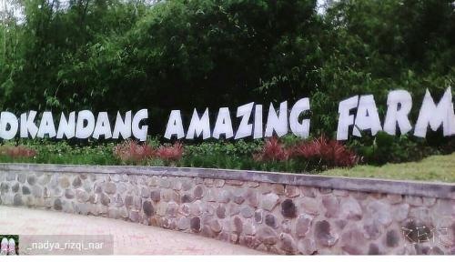

Wisata Rekreasi & Kuliner Unggulan Kota Depok
D'kandang Amazing Farm
D'Kandang Amazing Farm yang konsepnya seperti peternakan. Anak-anak bisa bermain sembari mengenal hewan dan tumbuhan yang ada di sana.
DetailsMasjid Kubah Emas

Masjid Dian Al-Mahri atau lebih dikenal dengan Masjid Kubah Emas, menjadi destinasi wisata ribuan muslim setiap harinya. Gaya bangunan masjid ini mengadopsi arsitektur masjid Timur Tengah, seperti Masjid Nabawi dan Masjidil Aqso.
DetailsKopi Warung Nako

Nako, hadirkan tempat nongkrong yang memiliki konsep autentik dan klasik. Kopi dan Warung Nako sendiri berasal dari kata kaca nako. Disini pengunjung akan dimanjakan dengan suasana klasik sehingga membuat obrolan menjadi asyik.
Details